Lab Access Guide¶
Complete these steps before anything else. By the end of this guide you will be connected to the VPN, inside VS Code on your lab server, with a terminal open and your ContainerLab topology confirmed healthy.
Both Cisco Secure Client and VS Code are already installed on your PC. You do not need to download or install anything.
What You Need Before Starting¶
You should have received a lab credential sheet with the following information. Confirm you have all values before proceeding:
| Item | Value |
|---|---|
| VPN Address | e.g. dcloud-sjc-anyconnect.cisco.com |
| VPN Username | (on your credential sheet) |
| VPN Password | (on your credential sheet) |
| Lab Server IP | 198.18.134.90 (same for all students) |
| SSH Password | C1sco12345 |
Do not have your credentials? Raise your hand and a proctor will bring them to you before you proceed.
Part 1 — Connect to the VPN¶
Step 1 — Launch Cisco Secure Client¶
Find and open the Cisco Secure Client application on your laptop.
Step 2 — Enter the VPN URL and Connect¶
The Cisco Secure Client window opens. In the address bar, enter the VPN URL from your credential sheet and click Connect.
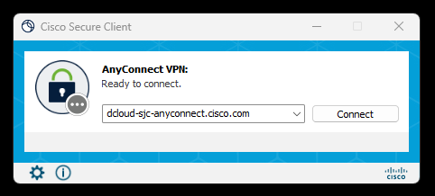
Your VPN address is pod-specific — use the address on your credential sheet, not the one shown in the screenshot.
Step 3 — Enter Your Credentials¶
A login dialog will appear. Enter your pod username and password from your credential sheet, then click OK.
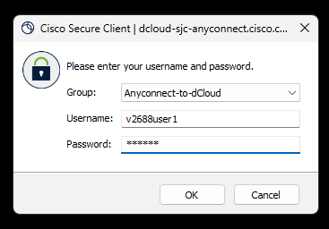
Credentials are case-sensitive. Type them exactly as printed on your credential sheet.
Step 4 — Accept the Connected Dialog¶
A confirmation dialog appears saying you are connected to the Cisco dCloud platform. Click Accept.
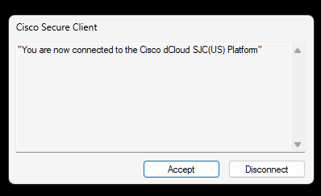
You are now on the dCloud network and can reach your lab server.
Part 2 — Open VS Code and Connect to the Lab Server¶
Step 5 — Launch VS Code¶
Find and open Visual Studio Code on your laptop.
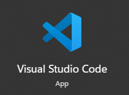
Step 6 — VS Code Opens¶
The VS Code Welcome screen appears.
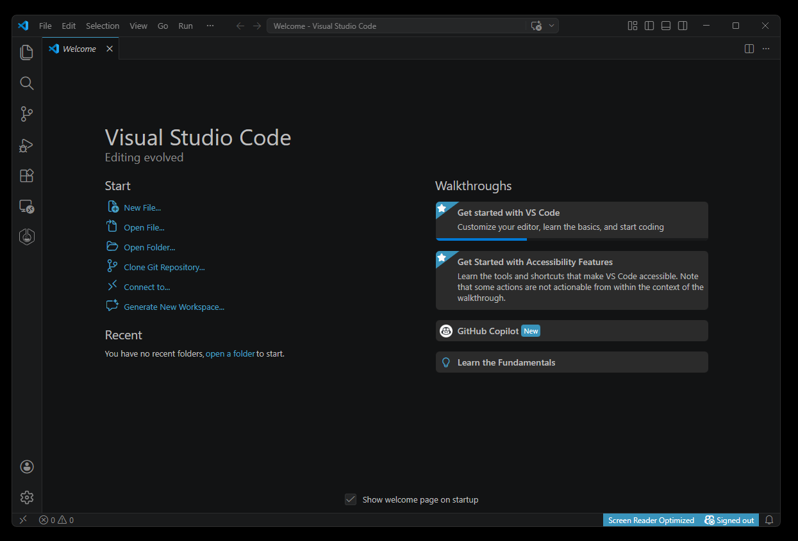
Step 7 — Open the Remote Connection Menu¶
Click the remote connection icon in the very bottom-left corner of VS Code (it looks like two angle brackets ><). A menu will appear at the top of the screen — click Connect to Host...
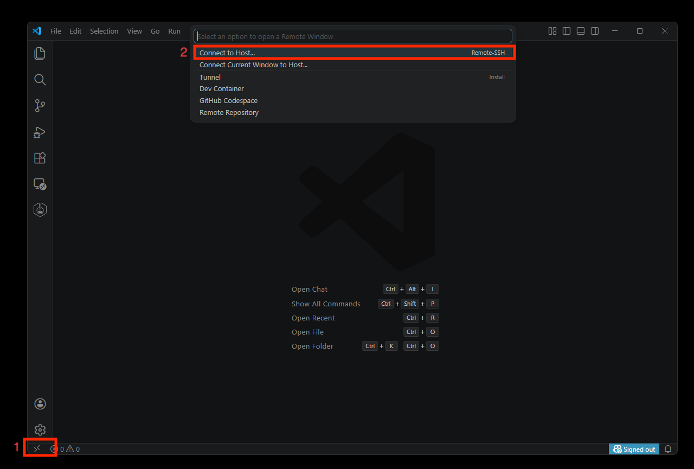
Alternative: Press
Ctrl+Shift+Pto open the Command Palette, typeRemote-SSH: Connect to Host, and press Enter.
Step 8 — Enter the Lab Server Address¶
In the bar that appears, type the following and press Enter:
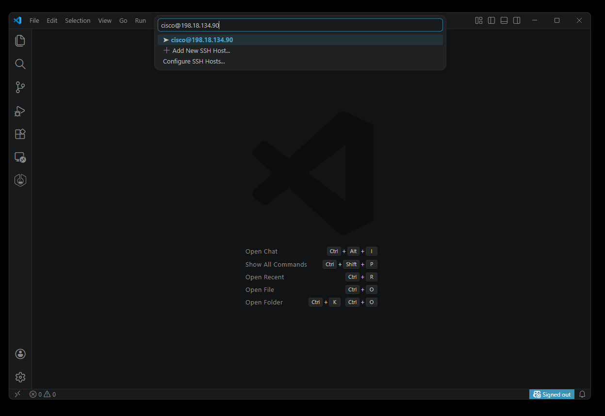
Step 9 — Password Prompt Appears¶
VS Code will open a new window and prompt you for a password at the top of the screen.
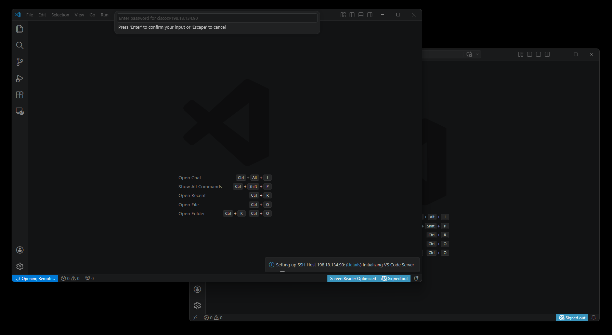
Step 10 — Enter the Password¶
Type the password and press Enter:
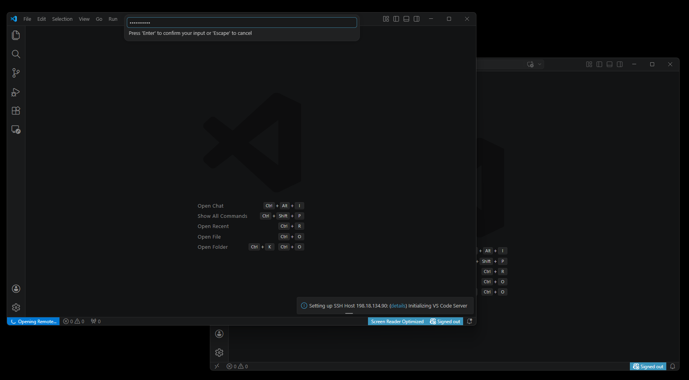
The password will not show characters as you type — this is normal. Just type it and press Enter.
VS Code will connect and initialize the remote session. This may take 15–30 seconds the first time.
Part 3 — Verify ContainerLab is Running¶
Once connected, VS Code will automatically open a "Welcome to Containerlab" tab. This confirms the ContainerLab extension is installed and active on your server.
Step 11 — Confirm You Are Connected¶
Look for two things:
- The "Welcome to Containerlab" tab is open in the editor
- The bottom-left status bar shows SSH: 198.18.134.90 in blue
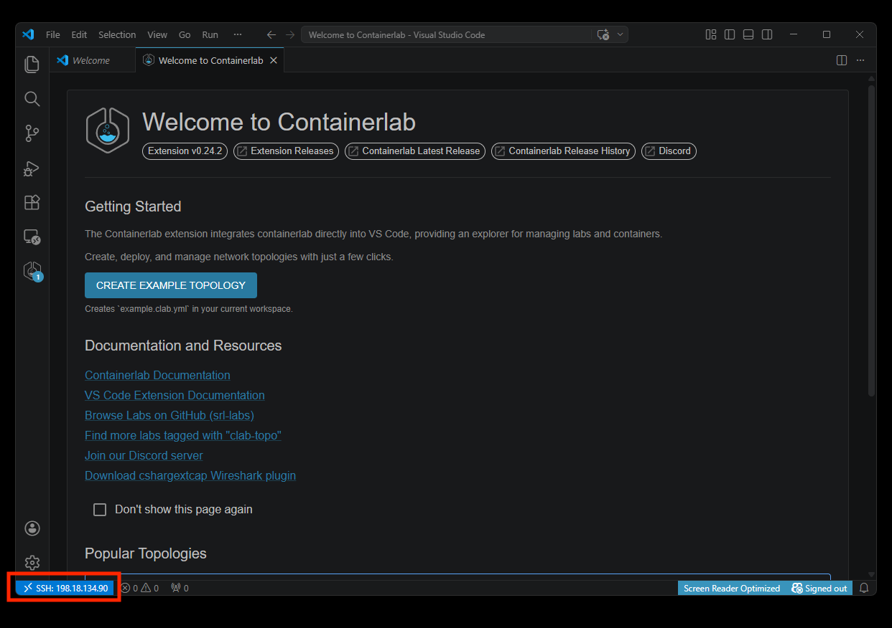
Step 12 — Open the ContainerLab Explorer¶
Click the ContainerLab icon on the left sidebar (the hexagon/network logo). The ContainerLab Explorer panel will open.
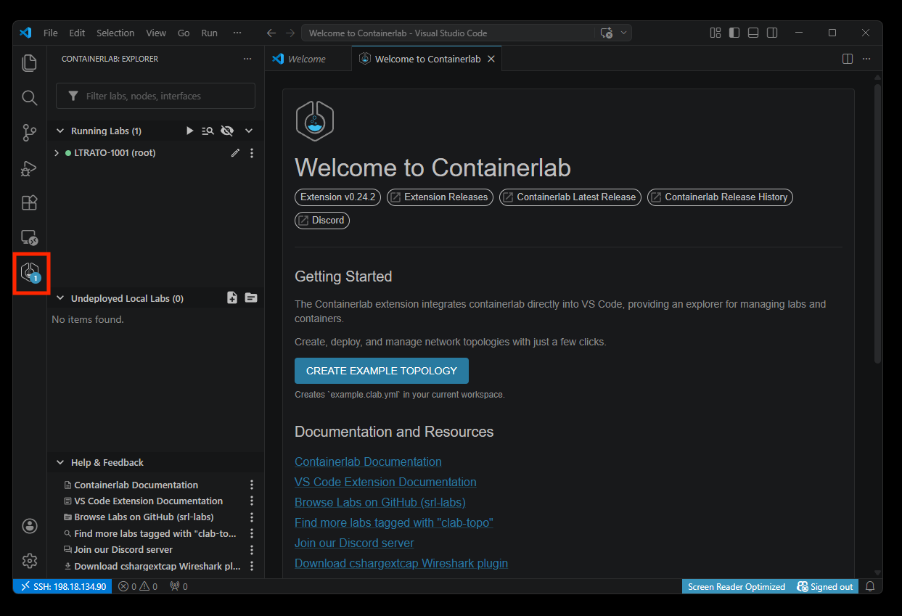
Step 13 — Expand the Lab and Verify All Nodes Are Healthy¶
Click the arrow next to LTRATO-1001 (root) to expand it. You should see all 10 devices listed with a green dot next to each one.
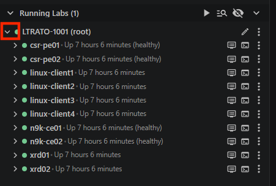
Green dot = healthy. If any device shows a red dot or is missing, notify your instructor — a container may still be booting. Allow 2–3 minutes after the session starts before raising your hand.
Step 14 — View the Topology (Optional)¶
Click on the LTRATO-1001 lab name in the explorer to open the interactive topology diagram.
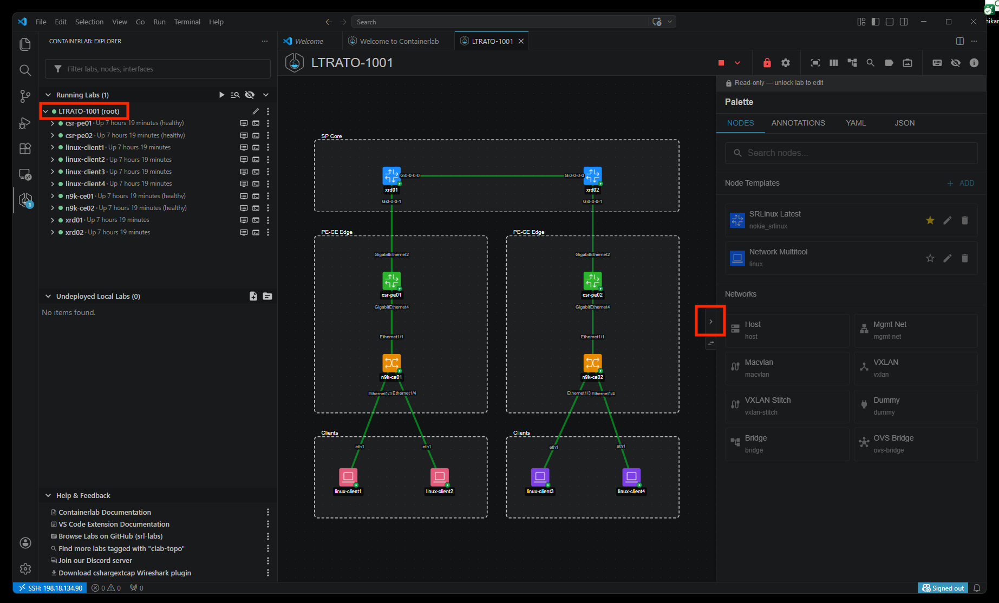
To get a cleaner view, click the arrow button on the right edge of the screen to collapse the Palette panel — you won't need it during the lab.
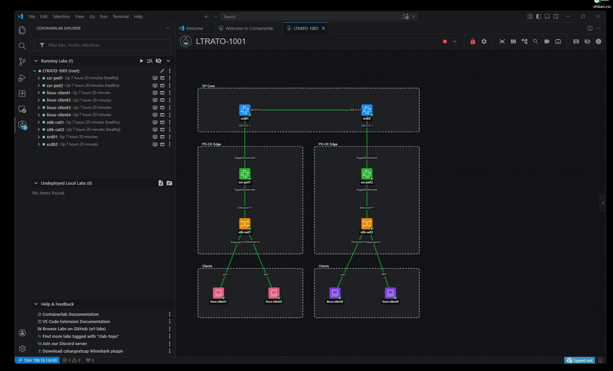
Part 4 — Open Your Terminal¶
The terminal at the bottom of VS Code is your main workspace for the entire lab. All Ansible and Terraform commands are run here.
Step 15 — Toggle the Terminal Panel¶
Click the Toggle Panel button in the upper-right toolbar, or press Ctrl+J.
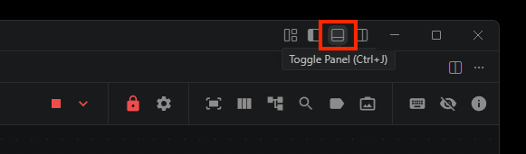
Step 16 — Your Terminal is Open¶
The terminal panel opens at the bottom of the screen. You should see a prompt:
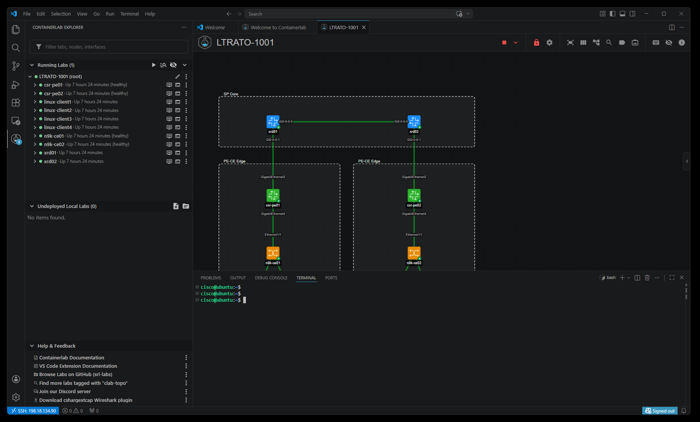
This is your workspace. Every command in this lab is run here. You are logged in as the
ciscouser on your Ubuntu lab server — the same server running all 10 ContainerLab devices.Tip: If you close the terminal panel by accident, press
Ctrl+Jto bring it back.
Part 5 — Connecting to Devices Directly (Optional)¶
You do not need to SSH into individual devices to complete this lab — Ansible handles all device connections automatically. However, if you want to inspect a device's config or look around, you can connect directly from the ContainerLab Explorer.
Step 17 — Click the SSH Icon Next to a Device¶
In the ContainerLab Explorer, hover over any device. Click the SSH icon (highlighted in red) that appears to the right of the device name to open a terminal session directly to that device.
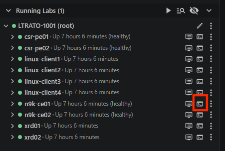
Step 18 — SSH Session Opens; Toggle Between Sessions¶
The SSH session opens in the terminal panel at the bottom. Multiple sessions appear on the right side of the panel — bash is your main workspace, and each SSH connection is listed below it. Click any session name to switch between them.
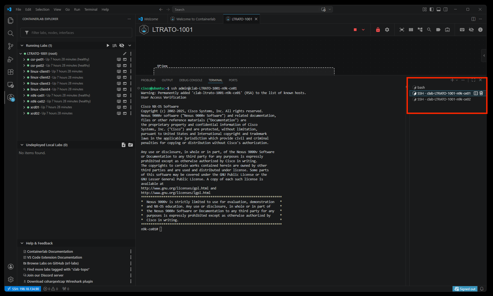
Step 19 — Reopen the Bash Terminal if Needed¶
If you accidentally close the main bash terminal, click the + button in the terminal panel header to open a new one.
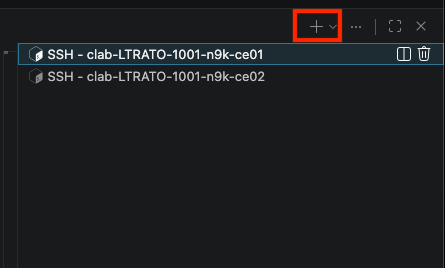
Step 20 — Restore the Terminal Panel if It Has Disappeared¶
If the entire terminal panel is gone (no panel visible at the bottom at all), press Ctrl+J or click the Toggle Panel button in the upper-right toolbar to bring it back.
The panel reappears with your previous terminal sessions intact. If no sessions remain, click
+to open a new bash terminal (see Step 19).
You're Ready¶
Confirm all of the following before moving on:
- [ ] VPN connected — Cisco Secure Client shows "Connected"
- [ ] VS Code connected — bottom-left shows
SSH: 198.18.134.90in blue - [ ] ContainerLab Explorer shows LTRATO-1001 running with all nodes healthy (green dots)
- [ ] Terminal panel is open with a
cisco@ubuntu:~$prompt
All set? Head to Getting Started for your next steps.
Quick Reference¶
| What | How |
|---|---|
| Reconnect VPN | Open Cisco Secure Client → enter VPN address → Connect → enter credentials |
| Reconnect VS Code SSH | Click >< icon bottom-left → Connect to Host → cisco@198.18.134.90 |
| SSH password | C1sco12345 |
| Open a terminal | Ctrl+J or click Toggle Panel in upper-right toolbar |
| New terminal tab | Click + in the terminal panel header |
| Connect to a lab device | Hover over device in ContainerLab Explorer → click SSH icon |
| Switch terminal sessions | Click the session name in the right side of the terminal panel |
| View topology graph | Click the LTRATO-1001 lab name in the ContainerLab Explorer |
Troubleshooting¶
| Problem | Solution |
|---|---|
| Secure Client says "Connection attempt has failed" | Verify the VPN address matches your credential sheet exactly — check for typos or extra spaces |
| Secure Client says "Login failed" | Re-type your VPN username and password — they are case-sensitive |
| VS Code cannot reach the server | Confirm Cisco Secure Client shows "Connected." If not, reconnect the VPN first |
| VS Code asks for password repeatedly | Make sure you are typing C1sco12345 exactly — capital C, number 1, lowercase sco |
| VS Code SSH connection times out | The VPN may have disconnected — check and reconnect if needed |
| Terminal shows your local PC, not the server | Check the blue SSH indicator bottom-left of VS Code — if missing, redo Step 7 |
| ContainerLab sidebar is empty | The topology may not be deployed yet — ask a proctor |
| A node shows a red dot in ContainerLab | Do not try to restart it yourself — raise your hand for a proctor |
| Closed the bash terminal by accident | Press Ctrl+J to reopen the panel, or click + for a new terminal |
For any issue not listed here, raise your hand and a proctor will assist you.